Form the Matter Molecule Atom to the Quark to the Strings
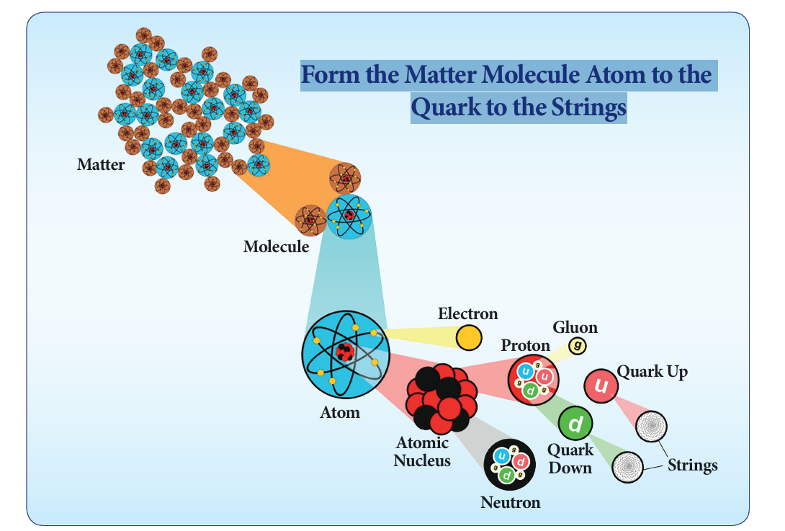
Picture, picture description begins form the matter molecule atom to the quark to the strings is given. In this picture, Matter, Molecule, Atom, Electron, Atomic Nucleus, Neutron, Proton, Gluon, Quark down, Quark up Quark down is given. picture description ends.
After studying this unit, students will be able to:
QR code, Qr code description begins QR code is given, Number, E, 0, F, I, X. QR code description ends.
In the last chapter we studied that anything around us is matter and it is made up of molecules. The molecules are combination of atoms of different elements or the same element. Table, chair, bag, book, chalk and blackboard, in short everything you see around are made up of atoms. Atoms are the smallest particles. They cannot be seen even through a microscope. In this lesson, we are going to study about atomic theories, sub-atomic particles, atomic number and mass number and valency.
An atom is thousand times smaller than the thickest human hair. It has an average diameter of 0.000000001 metre or 1 into 10 to the power of minus 9 metre. To understand the size of an atom, now let us find what is the size of known things like pencil, red blood cell, virus and dust particle.
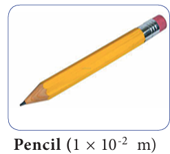
Picture, picture description begins size of pencil, 1 into 10 power minus 2 metre is given. picture description ends.
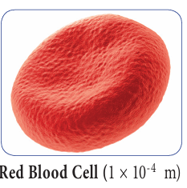
Picture, picture description begins size of red blood cell, 1 into 10 power minus 4 metre is given. picture description ends.
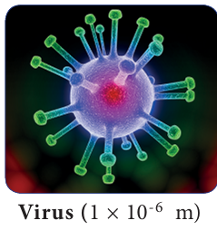
Picture, picture description begins size of virus, 1 into 10 power minus 6 metre is given. picture description ends.
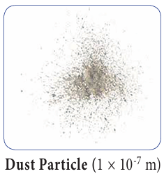
Picture, picture description begins size of dust particle, 1 into 10 power minus 7 is given. picture description ends.
Now you could imagine how small an atom would be.
Many scientists have studied the structure of the atom and advanced their theories about it. The theories proposed by Dalton, Thomson and Rutherford are given below.
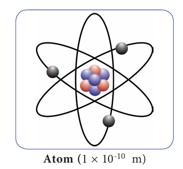
Picture, picture description begins size of atom 1 into 10 power minus 10 is given. picture description ends.
John Dalton proposed an atomic theory in the year 1808. He proposed that matter consists of very small particles which he named atoms. An atom is the smallest indivisible particle. It is spherical in shape. His theory does not propose anything about the positive and negative charges of an atom. Hence, it was not able to explain many of the properties of substances.
Picture, picture description begins John Dalton Picture is given. picture description ends.
DO YOU KNOW? (Box Item)
Nano meter is the smallest unit used to measure small lengths. One nano meter is equal to 1 into 10 to the power of minus 9.
In 1897, J, J, Thomoson proposed a different theory. He compared an atom to a watermelon. His theory proposed that an atom has positively charged part like the red part of the watermelon and in it are embedded, like the seeds, negatively charged particles which he called electrons. According to this theory as the positive and negative charges are equal, the atom as a whole does not have any resultant charge.
Thomson’s greatest contribution was to prove the existence of the negatively charged particles or electrons in an atom by experimentation. For this discovery, he was awarded the Nobel Prize in 1906. Although this theory explained why an atom is neutral, it was an incomplete theory in other ways.
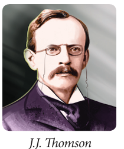
Picture, picture description begins J.J Thomson picture is given. picture description ends.
ACTIVITY 1
1, Name the objects you see here. Also try to write the particles by which each of them is made of?
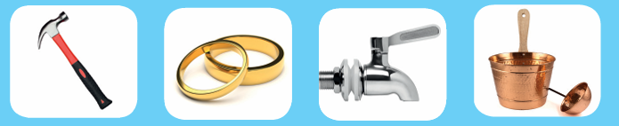
Picture, picture description begins of Iron hammer, gold ring, Stainless steel water tap, Copper vessel is given. picture description ends.
1, Dash
2, Dash
3, Dash
4, Dash
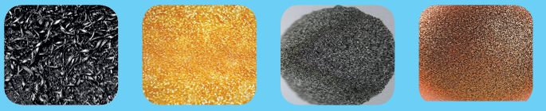
Picture, picture description begins Iron Particles, Gold particles, Stainless steel Particles (iron, chromium and nickel), copper particles is given. picture description ends.
1, Dash
2, Dash
3, Dash
4, Dash
There were shortcoming in Thomson's theory. Earnest Rutherford gave a better understanding. Earnest Rutherford conducted an experiment. He bombarded a very thin layer of gold with positively charged alpha rays. He found that most of these rays which travel at a great velocity passed through thin gold sheet without encountering any obstacles. A few are, however, turned back from the sheet. Rutherford considered this remarkable and miraculous as if a bullet had turned back after colliding with tissue paper. Based on this experiment, Rutherford proposed his famous theory. They are:
1, The fact that most alpha particles pass through the gold sheet means that the atom consists mainly of empty space.
2, The part from which the positively charged particles turned back is positively charged but it is very small in size as compared to the empty space.
From these inferences, Rutherford presented his theory of the structure of atoms. For this theory, he was awarded the Nobel prize for chemistry.
Rutherford’s theory proposes the following.
1, The nucleus at the centre of the atom has positive charge. Most of the mass of the atom is concentrated in the nucleus.
2, The negatively charged electrons revolve around the nucleus in specific orbits.
3, In comparison with the size of the atom, the nucleus is very very small.
Stages of discovery of the consitituents of an atom
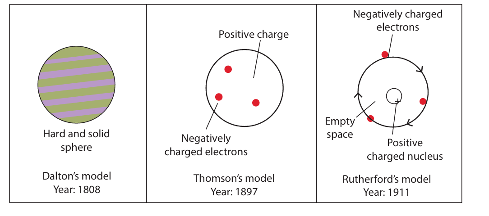
Picture, picture description begins stages of discovery of the constituents of an atom is explained through image. In this picture, Dalton’s Model, Year 1808, Hard and solid sphere, Thomson’s model Year, 1897, Positive charge, Negatively charged electrons, Rutherford’s Model, Year, 1911, Positively charged nucleus, Negatively charged electrons, empty space is given. picture description ends.
DO YOU KNOW? (Box items)
You have around 7 billion atoms in your body, yet you replace about 98% of them every year!
The discoveries made during the twentieth century proved that atoms of all elements are made up of smaller components - electron, proton and neutron. An electron from hydrogen atom is no different from the electron of a carbon atom. In the same manner, protons and neutrons of all elements also have same characteristics. These particles that make up the atom are called 'subatomic particles'.
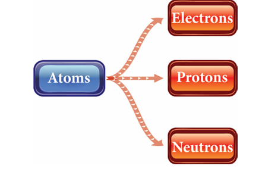
Picture, picture description begins atoms consist of electron, proton, neutron is explained through image. picture description ends.
Proton (p)
The proton is the positively charged particle and it is located at the nucleus. Its positive charge is of the same magnitude as that of the electron’s negative charge.
Neutron (n)
Neutron is inside the nucleus. The neutron does not have any charge. Except hydrogen (protium), the nucleus of all atoms contains neutrons. Protons and neutrons are the two types of particles in the nucleus of an atom. They are called nucleons.
Electron (e)
This is a negatively charged particle. Electrons revolve around the nucleus of the atom in specific orbits. The mass of an electron is negligible as compared to that of a proton or neutron. Hence, the mass of an atom depends on the number of protons and neutrons in the nucleus.
The total negative charge of all the electrons outside the nucleus is equal to the total positive charge in the nucleus. That makes the atom electrically neutral.
Table 4.1, Charge and mass of sub-atomic particles
Particle |
Discoverer |
Symbol |
Charge |
Mass (in kilo gram) |
Particle, Proton |
Discoverer, Goldstein |
Symbol, p |
Charge +1 |
1.6726 into 10 power minus 27 kilo gram |
Particle, Electron |
Discoverer, Sir John Joseph Thomson |
Symbol, e |
Charge Minus 1 |
9.1093 into 10 power minus 31 kilo gram |
Particle, Neutron |
Discoverer, James Chadwick |
Symbol, n |
Charge 0 |
1.6749 into 10 power minus 27 kilo gram |
ACTIVITY - 2
Look at the given diagram and answer the following questions.
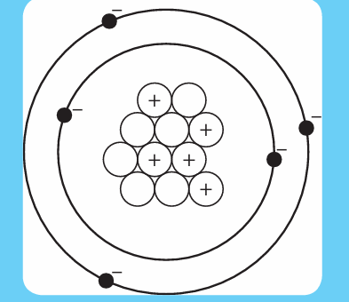
Picture, picture description begins in this diagram an atom with the presence of proton, neutron and electron is given. picture description ends.
1, The positively charged particle is Dash
2, The negatively charged particle is Dash
3, Dash is the neutral particle.
If all the elements are made up of same sub-atomic particles, how will a carbon atom differ from an iron atom? Further investigations led to the discovery that the number of protons inside the nucleus of an atom determines what element it is. For example, if the nucleus has only one proton, then all such atoms are hydrogen atoms. If there are eight protons then that atom is oxygen.
QR code, QR code description begins QR code is given, Number, D, 8, G, Z, W. QR code description ends.
DO YOU KNOW? (Box Item)
Is the structure of an atom same as the structure of the solar system? Yes! It is similar to the solar system. It has a core (center) called nucleus and it has paths called orbits around the nucleus.
The number of electrons or protons in an atom is called the atomic number of that atom. It is represented by the letter Z. If we know the atomic number of an atom, we can find the number of electrons or protons in it. Look at the figures. The nucleus of hydrogen atom has one proton around which revolves one electron. It means that its atomic number (z) is 1.
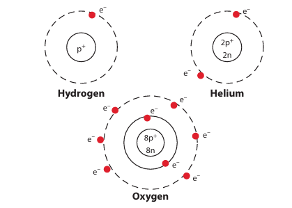
Picture, picture description begins atomic structure of hydrogen, helium and oxygen is given. picture description ends.
In a helium atom, there are two protons in the nucleus and two electrons revolving in the orbit around the nucleus. So, the atomic number(z) of helium is 2.
Look at the atomic structure of oxygen shown in the figure. What is its atomic number?
Try yourself
If the atomic number of carbons is 6, what is the number of electrons revolving in its orbit?
We have seen that the mass of an atom is concentrated in its nucleus. From this, we can get the mass number (A). It is equal to the sum of the number of protons (p) and number of neutrons (n) in the nucleus.
Atomic mass or Mass number
= Number of Protons + Number of Neutrons A = p + n
Lithium atom contains 3 protons and 4 neutrons. Its mass number (A) = 3+4 = 7. In a sodium atom, there are 11 Protons and 12 neutrons. Hence, its mass number (A) is 23 (11 + 12).
Try yourself (Box Items)
1, Why the atomic numbers and mass numbers are always whole numbers?
2, A sulphur atom contains 16 protons and 16 neutrons. Calculate its atomic number and mass number.
While writing the symbol of an element, its atomic number and mass number are also written. For example, the symbols of hydrogen, carbon and oxygen are written as 1H power 1, 6C power 12, 8 O power 16 respectively. All the elements in the periodic table have the following combination of protons, electrons and neutrons.
Table 4.2, Symbols of elements
Element |
Symbol |
Number of protons, electron, neutron, |
Element, Carbon |
Symbol, 6C12 |
6p,6e,6n |
Element, Beryllium |
Symbol, 4Be9 |
4p,4e,5n |
Element, Nitrogen |
Symbol, 7N14 |
7p,7e,7n |
Element, Boron |
Symbol, 5B11 |
5p,5e,6n |
Isotopes
Atoms of element can have different number of neutrons. Such atoms will have same atomic number but different mass numbers. These atoms are called isotopes. For example, hydrogen has Isobars three isotopes. They are: Proteum (1H1, hydrogen mass number 1 atomic number 1), Deuterium (1H2, hydrogen mass number 1 atomic number 2), Tritium (1H3, hydrogen mass number 1 atomic number 3).
Isobars
Atoms that have the same mass number but different atomic numbers are called isobars. Example: Calcium (20Ca40, Calcium atomic number 20 mass number 40), Argon (18Ar40, atomic number 18 mass number 40).
Table 4.3, Elements and their symbols with their atomic number and mass number
Element |
Symbol |
Atomic number |
Protons (p) |
Neutrons(n) |
Mass number (p+n) |
Element, Hydrogen |
Symbol, H |
Atomic number, 1 |
Protons, 1 |
Neutrons, 0 |
Mass number, 1 |
Element, Helium |
Symbol, H e |
Atomic number, 2 |
Protons, 2 |
Neutrons, 2 |
Mass number, 4 |
Element, Aluminium |
Symbol, Al |
Atomic number, 13 |
Protons, 13 |
Neutrons, 14 |
Mass number, 27 |
Element, Oxygen |
Symbol, O |
Atomic number, 8 |
Protons, 8 |
Neutrons,8 |
Mass number, 16 |
Element, Sodium |
Symbol, Na |
Atomic number, 11 |
Protons, 11 |
Neutrons,12 |
Mass number, 23 |
ACTIVITY 3
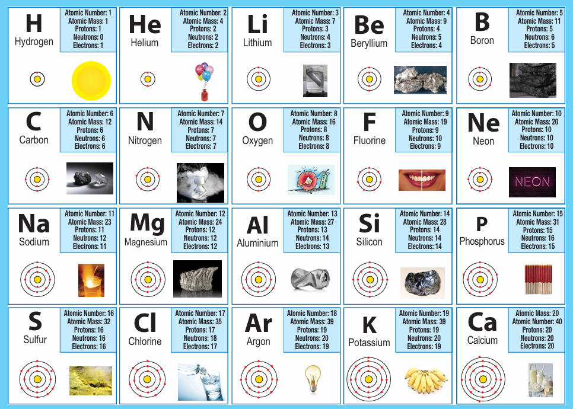
Picture, picture description begins in the given picture, contains the element with atomic number 1 to 20 and also each element having atomic number, atomic mass, number of protons, neutrons, and electrons, atomic structures, and its uses. picture description ends.
Table description begins
Element |
Atomic Number |
Atomic Mass |
Protons |
Neutrons |
Electrons |
Element, H, Hydrogen |
Atomic Number, 1 |
Atomic Mass, 1 |
Protons, 1 |
Neutrons, 0 |
Electrons, 1 |
Element, H e, Helium |
Atomic Number, 2 |
Atomic Mass, 4 |
Protons, 2 |
Neutrons, 2 |
Electrons,2 |
Element, L I, Lithium |
Atomic Number, 3 |
Atomic Mass, 7 |
Protons, 3 |
Neutrons, 4 |
Electrons,3 |
Element, B e, Beryllium |
Atomic Number, 4 |
Atomic Mass, 9 |
Protons, 4 |
Neutrons, 5 |
Electrons, 4 |
Element, B, Boron |
Atomic Number, 15 |
Atomic Mass, 11 |
Protons, 5 |
Neutrons, 6 |
Electrons,5 |
Element, C, Carbon |
Atomic Number, 6 |
Atomic Mass, 12 |
Protons, 6 |
Neutrons, 6 |
Electrons,6 |
Element, N, Nitrogen |
Atomic Number, 7 |
Atomic Mass, 14 |
Protons, 7 |
Neutrons, 7 |
Electrons,7 |
Element, O, Oxygen |
Atomic Number, 8 |
Atomic Mass, 16 |
Protons, 8 |
Neutrons, 8 |
Electrons, 8 |
Element, F, Florine |
Atomic Number, 9 |
Atomic Mass, 19 |
Protons, 9 |
Neutrons, 10 |
Electrons,9 |
Element, N e, Neon |
Atomic Number, 10 |
Atomic Mass, 20 |
Protons, 10 |
Neutrons, 10 |
Electrons,10 |
Element, Na, Sodium |
Atomic Number, 11 |
Atomic Mass, 23 |
Protons, 11 |
Neutrons, 12 |
Electrons, 11 |
Element, Mg, Magnesium |
Atomic Number, 12 |
Atomic Mass, 24 |
Protons, 12 |
Neutrons, 12 |
Electrons,12 |
Element, Al, Aliminium |
Atomic Number, 13 |
Atomic Mass, 27 |
Protons, 13 |
Neutrons, 17 |
Electrons,13 |
Element, Si, Silicon |
Atomic Number, 14 |
Atomic Mass, 28 |
Protons, 14 |
Neutrons, 14 |
Electrons, 14 |
Element, P, Phosphorus |
Atomic Number, 15 |
Atomic Mass, 31 |
Protons, 15 |
Neutrons, 16 |
Electrons,15 |
Element, S, Sulfur |
Atomic Number, 16 |
Atomic Mass, 32 |
Protons, 16 |
Neutrons, 16 |
Electrons,16 |
Element, Cl, Chlorine |
Atomic Number, 17 |
Atomic Mass, 35 |
Protons, 17 |
Neutrons, 18 |
Electrons,17 |
Element, Ar, Argon |
Atomic Number, 18 |
Atomic Mass, 39 |
Protons, 19 |
Neutrons, 20 |
Electrons,19 |
Element, K, Potassium |
Atomic Number, 19 |
Atomic Mass, 39 |
Protons, 19 |
Neutrons, 20 |
Electrons,19 |
Element, Ca, Calcium |
Atomic Number, 40 |
Atomic Mass, 20 |
Protons, 20 |
Neutrons, 20 |
Electrons,20 |
Table description ends
. Observe the table given above and answer the following questions
1, I am used for breathing; without me you cannot live. Write my name and symbol
2, It is used in filling the balloons. It is a gas, identify it. What is its mass number?
3, Name the element present in banana. What is its atomic number?
4, I am found in crackers. How many protons do I have?
5, I am the most valuable element. Find who am I. Can you say my mass number?
When we shake hands with others, we can either shake hand with one persons using one hand or shake hand with two persons using both our hands. If we have more hands, we can shake hands with more persons. In the same manner atoms can share either one electron or two or three or four electrons and some cannot share any electron. This property is called valency.
Table 4.4, Elements and their symbols with their atomic number and mass number and valency.
Element |
Symbol |
Atomic Number |
Mass Number |
Valency |
Element, Hydrogen |
Symbol, H |
Atomic Number, 1 |
Mass Number, 1 |
Valency, 1 |
Element, Carbon |
Symbol, C |
Atomic Number, 6 |
Mass Number, 12 |
Valency, 4 |
Element, Oxygen |
Symbol, O |
Atomic Number, 8 |
Mass Number, 16 |
Valency, 2 |
Element, Sodium |
Symbol, Na |
Atomic Number, 11 |
Mass Number, 23 |
Valency, 1 |
Element, Calcium |
Symbol, Ca |
Atomic Number, 20 |
Mass Number, 40 |
Valency, 2 |
DO YOU KNOW? (Box Item)
What makes atoms stick together? Electrons carry a negative electric charge, and protons carry a positive charge. The attraction between them holds electrons in orbits.
Valency is the combining property of an atom. It is a measure of how many hydrogen atoms it can combine with. For example, oxygen can combine with two hydrogen atoms and create water molecule. So, the valency of oxygen atom is two. In the case of chlorine, it can combine with only one hydrogen to create HCl (hydrochloric acid). Here, the valency of chlorine is one. Methane (CH4) has one carbon atom combining with four hydrogen atoms. Can you guess the valency of carbon in methane? In ammonia molecule, nitrogen combines with three hydrogen atoms. What is the valency of nitrogen in ammonia? Atoms of different elements combine with each other to form molecules. Valency determines the number of atoms of an element that combines with atom or atoms of another type. The element having valency one is called monovalent. Example: Hydrogen and Sodium. The elements having valency two are called divalent. Example: Oxygen and Beryllium. The elements having valency three are called trivalent. Example: Nitrogen and Aluminium. Some elements exhibit more than one valency.
For example, iron combines with oxygen to form two types of oxides namely, ferrous oxide (exhibits valency 2) and ferric oxide (exhibits valency 3). We will study about them in detail later.
When atoms of different elements combine with each other, molecules of compounds are formed. In these instances, it is necessary to know the valancies of those elements. Valencies of some elements are given in Table 4.4.
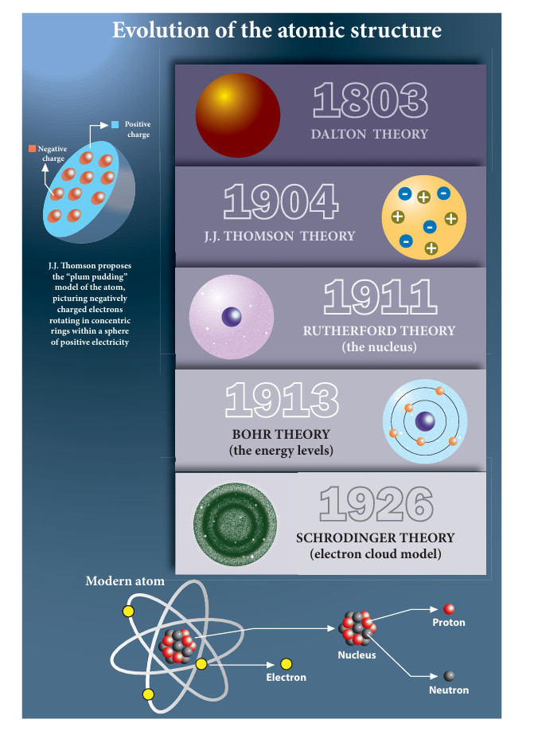
Picture, picture description begins Evolution of the atomic Structure is given. In this picture, 1803, Dalton Theory, 1904, J,J Thomson Theory, 1911, Rutherford Theory (the nucleus), 1913, Bohr Theory, (the energy levels), 1926, Schrodinger Theory (electron cloud model), Modern atom, electron, Nucleous, proton, Neutron, Negative charge, Positive charge and J, J, Thomson proposes the “plum pudding” model of the atom, Picturing negatively charged electrons rotating in concentric rings within a sphere of positive electricity is given. picture description ends.
QR code, QR code description begins QR Code is given, Number, 3, O, R, I, A. QR Code description ends.
1, Choose the appropriate answer.
1, The basic unit of matter is Dash
A, element
B, atom
C, molecule
D, electron
2, The sub-atomic particle which revolves around the nucleus is Dash
A, atom
B, neutron
C, electron
D, proton
3, Dash is positively charged.
A, Proton
B, Electron
C, Molecule
D, Neutron
4, The atomic number of an atom is the Dash
A, number of neutrons
B, number of protons
C, total number of protons and neutrons
D, number of atoms
5, Nucleons comprises of Dash
A, protons and electrons
B, neutrons and electrons
C, protons and neutrons
D, neutrons and positron
ii, Fill in the blanks.
1, The smaller particles found in the atom are called Dash
2, The nucleus has Dash and Dash
3, The Dash revolve around the nucleus.
4, If the valency of carbon is 4 and that of hydrogen is 1, then the molecular formula of methane is Dash
5, There are two electrons in the outermost orbit of the magnesium atom. Hence, the valency of magnesium is Dash
iii, Match the following.
Valency
Neutral particle
Iron
Hydrogen
Positively charged particle
Fe
Proton
Electrons in the outermost orbit
Neutron
Monovalent
iv, State true or false. If false, correct the statement.
1, he basic unit of an element is molecule.
2, The electrons are positively charged.
3, An atom is electrically neutral.
4, The nucleus is surrounded by protons.
5, Complete the analogy.
1, Sun: Nucleus, Planets: Dash
2, Atomic number: Dash, Mass number: Number of protons and neutrons.
3, K: Potassium, C Dash
vi, Consider the following statements and choose the correct option.
1, Assertion: An atom is electrically neutral. Reason: Atoms have equal number of protons and electrons.
2, Assertion: The mass of an atom is the mass of its nucleus.
Reason: The nucleus is at the centre.
3, Assertion: The number of protons or the number of neutrons is known as atomic number.
Reason: The mass number is the sum of protons and neutrons.
vii, Answer very briefly.
1, Define – Atom.
2, Name the sub-atomic particles.
3, What is atomic number?
4, What are the characteristics of proton?
5, Why neutrons are called neutral particles?
viii, Answer briefly.
1, Distinguish isotopes from isobar.
2, What are isotones? Give one example.
3, Differentiate mass number from atomic number.
4, The atomic number of an element is 9. It has 10 neutrons. Find the element from the periodic table. What will be its mass number?
ix, Answer in detail.
1, Draw the structure of an atom and explain the position of the sub-atomic particles.
2, The atomic number and the mass number of an element is 26 and 56 respectively. Calculate the number of electrons, protons and neutrons in its atom. Draw the structure.
3, What are nucleons? Why are they called so? Write the properties of the nucleons.
4, Define valency. What is the valency of the element with atomic number 8? What is the compound format by this element with hydrogen?
10, Higher Order Thinking Skills.
1, An atom of an element has no electron. Will that atom have any mass or not? Can an atom exist without electron? If so then give example.
2, What is common salt? Name the elements present in it. Write the formula of common salt. What are the atomic number and the mass number of the elements? Write the ions in the compound.
xi, Project.
To have an idea of what atoms are, students can be asked to construct atoms using pipe cleaners (thin metal wires-electron shells), pom poms (balls-different colours for protons and neutrons) and beads (electrons). Students will love and enjoy putting them together and they look great hanging from the ceiling in the classroom.
Atomic Structure
Let’s build an atom.
PROCEDURE:
Step 1: Use the URL to reach stimulation page. Click play button to launch the simulation.
Step 2: Click on the”ATOM” , a new window will be open. Drag the particles (Protons, Neutrons and Electrons) from the baskets which is at the bottom of the display.
Step 3: You can observe the changes in ‘Elements, Net charge and Mass number’ at the right-side windows.
Step 4: Click on the ‘Symbol” at the bottom. Drag the particles and get the Symbol of the element. Step 5: Click on the”GAME” and play the games.
Atomic Structure URL: https://phet.colorado.edu/en/simulation/build-an-atom
*Pictures are indicative only
*If browser requires, allow Flash Player or Java Script to load the page.
QR Code, QR code description begins QR Code is given, Number, 8, K, 9, V, U. QR code description ends.
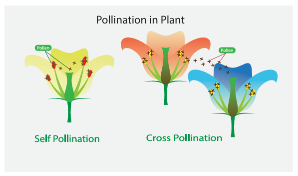
Picture, picture description begins the picture shows the types of pollination in plants, that is self pollination and cross pollination. picture description ends.
Learning Objectives
After studying this lesson, students will be able to:
QR Code, QR code description begins QR Code is given. G, 2, T, 0, S. QR code description ends.
Introduction
We know already that flowering plants have root, stem and leaves. They are called vegetative organs. Flowers, fruits and seeds in a plant are called reproductive organs. In earlier classes we have seen that new plants can be grown from seeds. In this lesson, we are going to know how a flower changes itself into a fruit, and the modifications of root, stem and leaves of a plant.
ACTIVITY 1
Aim
To raise a new generation of plant from watermelon and potato.
Materials required
Two pots with soil, potato, watermelon seeds and water.
Procedure
Fill both pots with soil mixed with compost or manure. Take a young potato. Ensure that it is not dried up and the skin still looks fresh. Bury a potato in one pot. Sow watermelon seeds in another pot. Pour water regularly and maintain the plant.
Observation
After few days, we can see a single plant arising from a buried potato. Plants arise from the pot sowed with watermelon seeds. Each seed produces a plant.
We can see from this activity that watermelon plant is produced from that seeds. Potato plant is not from seed, but from the stem tuber (vegetative part). Seed is not only the source for new generation, even vegetative part of a plant can be used to produce a new plant.
The process by which plants and animals produce young ones and increase their number is known as ‘reproduction’. Drumstick tree can be grown from both seeds and stem cuttings. When plants are reproduced from the seeds we call that process as sexual reproduction. All other ways of reproduction without seed are called as asexual reproduction.
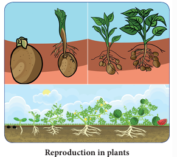
Picture, picture description begins the picture shows the reproduction in plants. picture description ends.
ACTIVITY 2
Find out how these plants reproduce.
Serial Number |
Name of the Plant |
Reproductive Part |
|||
Seed |
Stem |
Cutting |
Layering |
||
1 |
Mango |
|
|
|
|
2 |
Potato |
|
|
|
|
3 |
Banana |
|
|
|
|
4 |
Tamarind |
|
|
|
|
5 |
Rose |
|
|
|
|
6 |
Mustard |
|
|
|
|
7 |
Coriander |
|
|
|
|
8 |
Moringa |
|
|
|
|
9 |
Pumpkin |
|
|
|
|
10 |
Radish |
|
|
|
|
Seed is produced from a flower by the process of pollination and fertilization. This is known as sexual reproduction. To understand how seeds are formed in a flower, first we need to understand parts of a flower.
ACTIVITY 3
Take a flower. Dissect it longitudinally as shown in the figure and find the parts inside the flower. Can you identify the male reproductive part, androecium (stamen, filament and pollen sac)? Carefully observe the female reproductive part, gynoecium (ovary, style and stigma). If they are not seen clearly, gently pluck off the sepals and petals. Make a drawing of the parts and arrange them in your notebook.
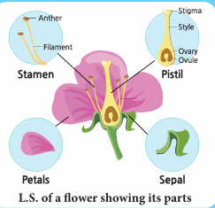
Picture, picture description begins longitudinal sections of a flower parts is given. In this Picture, Stamen (Filament, Anther), Pistil (Ovule, Ovary, Style, Stigma), Petals, Sepal parts are given. picture description ends.
Let us compare few buds and opened f lowers of Hibiscus and Datura. Observe bud and opened flower of Hibiscus and Datura. We can tabulate the characteristics of Hibiscus and Datura flowers as below.
Hibiscus Flower |
|
Bud |
Opened flower |
Green colour |
Bright colour |
Sepals |
Petals |
Dissected Hibiscus flower |
|
Bud |
Opened flower |
Curled petals |
Expanded petals |
Small tube with yellow lobes – Anthers Picture, picture description begins the bud of a hibiscus flower is given. picture description ends. |
Expanded tube with yellow lobes –Anthers Picture, picture description begins the picture of a hibiscus flower is given. picture description ends.
|
Datura Flower |
|
Bud |
Opened flower |
Green colour |
White colour |
Sepals |
Petals |
Dissected Datura flower |
|
Bud |
Opened flower |
Curled petals |
Expanded petals |
Small tube with yellow lobes – Anthers Picture, picture description begins bud of a datura flower is given. picture description ends |
Expanded yellow lobes –Anthers Picture, picture description begins the picture of a datura is given. picture description ends. |
In a bud, we can see a green colour, leaf like structure which cover the whole bud or flower. Each of these green leaf like structure present as an outermost layer is called as sepal. This outer most ring of sepals is known as calyx.
Petals are the largest part of flowers. They are often attractive, brightly coloured, sometimes sweet scented and attract the insects. This ring of petals together is called corolla.
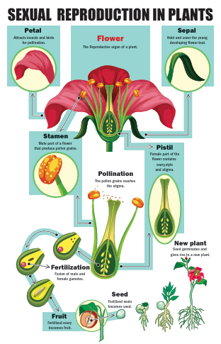
Picture, picture description begins Sexual reproduction in Plants is given, in this picture, Flower, The Reproductive organ of a plant. Petal, Attracts insects and birds for pollination. Sepal, Hold and cover the young developing flower bud. Stamen, Male part of a flower that produce pollen grains. Pistil, Female part of the flower contains ovary,style and stigma. Pollination, the pollen grains reaches the stigma. Fertilization Fusion of male and female gametes. New plant, Seed germinates and gives rise to a new plant. Seed, Fertilized ovule becomes seed. picture description ends.
Fruit, Fertilized ovary becomes fruit.
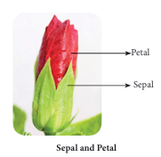
Picture, picture description begins the picture shows the sepal and petal of a hibiscus flower . picture description ends.
Inside corolla, in Hibiscus, we can observe a long tube on which many stamens are arranged. But, in Datura we can see only five stalked structures, stamens. This ring or whorl of a flower is called androecium. Each stamens consists of two parts – a stalk called filament and a lobe called anther. If you touch these lobes in a mature flower, we can get a powdery substance called pollen grains (male reproductive part).
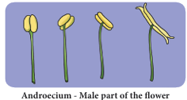
Picture, picture description begins Androecium, Male part of a flower is given. picture description ends.
Inside androecium whorl, we can find a female reproductive part of the flower, called gynoecium. You will find this part with a swollen bottom part.
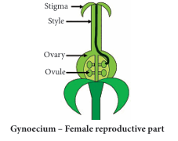
Picture, picture description begins Gynoecium- female reproductive part of a flower is given. In this Picture, Ovule, Ovary, Style, Stigma are indicated. picture description ends.
This is the ovary. Seeds are produced in this part. On top of the ovary there is a slender tube like structure called style. The top stickiest tip of the style is stigma. Pollen grains are received by the stigma. This is the fourth whorl of a flower.
Flowers can be divided into two types. They are explained below.
Complete Flower
If all the four whorls - calyx, corolla, stamens and pistil are present, then it is called as complete f lower. Complete flowers are bisexual flowers.
Incomplete Flower
If any of these four whorls is missing, then it is called as incomplete flower. Incomplete flowers are unisexual flowers. There are two types of unisexual flowers, male flower and female flower.
The flower with androecium and without gynoecium is called as male flower and the one with gynoecium and without androecium is known as female flowers.
DO YOU KNOW? (Box Item)
Sunflower is not a single flower. It is a group of flowers clustered together. A group of flowers arranged together is called inflorescence. Tridax procumbens, looks like a single f lower, but it is an inflorescence. Leaf juice of this plant is used to cure wounds and cuts.
ACTIVITY 4
Make a flower album Collect some flowers and press them between pages of newspaper or book. Place two thick sheets and keep a heavy object, such as brick, on the top to apply pressure. Turn the sides every two to three days. Allow flowers to dry completely. Collect the dried flowers and paste them in an album. Now, your flower album is ready.
ACTIVITY 5
Using the information from the above diagram complete the following table: |
|||
Name of the flower |
Complete OR Incomplete |
Unisexual OR Bisexual |
Male OR Female |
Hibiscus |
|
|
|
Pumpkin |
|
|
|
Rose |
|
|
|
Coconut |
|
|
|
Jasmine |
|
|
|
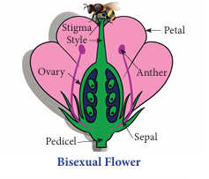
Picture, picture description begins picture of a bisexual flower is given. In this picture, Pedicel, Sepal, Ovary, Anther, Stigma, Style, Petal parts are indicated. picture description ends.
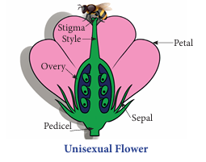
Picture, picture description begins Picture of a unisexual flower is given. In this Picture, Pedicel, Sepal, Ovary, Anther, Stigma, Style, Petal parts are indicated. picture description ends.
We know that flowers of pumpkin are unisexual - that is some flowers are male while many are female flowers. We Petal can easily identify the male and female flower of pumpkin, even before the buds bloom. To understand how a flower develops into fruit, let us perform an experiment on pumpkin plant.
ACTIVITY 6
Once flower buds appear, immediately identify ten female flower buds from a pumpkin plant. Tie a plastic bag around each bud so that no outside material can enter inside. Ensure to make small holes with a pin to allow air flow. Wait for two to three days to bloom.
Choose three to four male flowers. Pluck the stamens of these flowers and dust the pollen grains in a sheet of paper and collect it. Open five out of ten bags containing female flowers. Brush the collected pollen grains on the stigma with a soft paint brush. Take care not to damage the stigma. After few days we can see that flower in all bags that were not opened at all would wilt without forming a fruit, while most of the flowers to which pollens have been applied bear fruits.
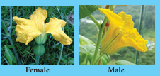
Picture, picture description begins male and female pumpkin flower is given. picture description ends.
In the above experiment we transferred the pollen grains from male flower to the female f lower. This is called as an artificial pollination. However, in nature there are many ways in which pollen grains reach the stigma of the f lower and it is called as natural pollination.
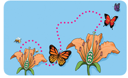
Picture, picture description begins Natural cross pollination picture is given. The picture shows, a Butterfly take part of the natural cross pollination. picture description ends.
In some plants like grasses, pollen grains are light. Stamens shed pollen grains, and are carried by wind to other flower. Insects, birds are also agents of pollination. Bees, butterflies and variety of birds hover around flowers. They help to carry pollen from one flower to another. Pollen grains stick to their legs, wings or abdomen when they move from one flower to another. This is called as cross pollination.
When you shake stamens, pollen grains fall. Thus, when wind shakes the flower or when a butterfly agitates the flower, pollen grains could fall onto the stigma of the same flower. Some plants that have both the male and female parts within a single flower (bisexual) pollinate by this means. This is called as self pollination.
Table 5.1, Differences between self pollination and cross pollination.
Self Pollination |
Cross Pollination |
Pollen grains are transferred from the anther to the stigma of the same flower. |
Pollen grains are transferred from the anther of one flower to the stigma of another flower of the same plant or same variety |
Plants do not need to produce pollen grains in a large quantity for self pollination |
Plants need to produce pollen grains in larger quantities to increase the chance of pollination. |
It does not produce changes in the characteristics of new plants. |
Cross pollination does introduce variations in the characteristics of new plants. |
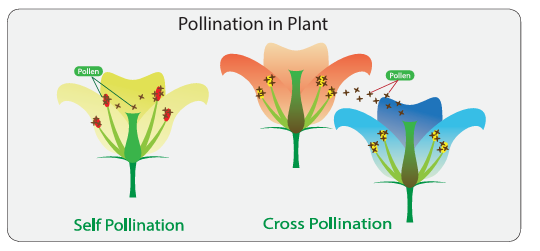
Picture, picture description begins the picture shows self and cross- pollination in a flower. picture description ends.
Beans (Fabaceae) and tomatoes (Solanaceae) commonly self-pollinate. Even though, for example, tomato self pollinate, they need the help of the insects to create vibrations within the flowers that will effectively loosen the pollen. Paddy is mostly self pollinating using just gentle wind as the pollinating agent. The agents that are helping in pollination are called pollinators.
In many plants, pollens have to come from some other flowers. This is obvious in case of plants which have distinct male and female flowers like pumpkin. In some flowers the gynoecium matures first before the androecium shed pollens. Such plants need cross pollination. Plants such as apples, plums, strawberries, pumpkins use insects for cross-pollination.
During pollination, pollen grains reach stigma. What happens to them after this? Substances produced on the stigma causes the pollen grain to germinate. During the germination a tube develops from the pollen grain which carries male gametes and ultimately reaches female gamete inside the ovary through the style. Male gamete fuses with the female gamete to form zygote. This process is known as fertilization.
Where is this female gamete located? Inside the ovary, small rounded structures, ovules are present. In these ovules, female gamete is present. To know more about this, we should cut ovary of a flower in longitudinal and transverse ways.
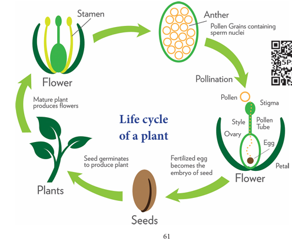
Picture, picture description begins Life cycle of a plant is given. In this picture, Anther, Pollen Grains containing sperm nuclei. Pollination, pollen, Stigma, Style, Pollen Tube, Ovary, Egg, Petal. Flower, Fertilized egg becomes the embryo of seed. Seeds, Seed germinates to produce plant. Plants, Mature plant produces flowers. Flower, Stamen is given. picture description ends.
QR code, QR code description begins QR code is given, Number, 5, P, S, B, 6. QR code description ends.
Cut a ovary of a flower both vertically and horizontally. Observe the ovules. Compare the ovary and ovules from few different f lowers. Are there one or more ovules? Can you see any connection between the number of ovules in the ovary and number of seeds in each fruit?
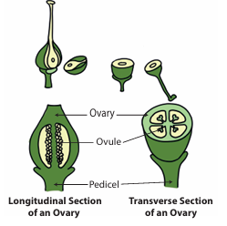
Picture, picture description begins Longitudinal section and Transverse section of an ovary is given. In this pictures, Pedicel, Ovule and Ovary are pointed out. picture description ends.
Collect some fruits like tomato, brinjal, lady’s finger (vegetable), mango, peas and custard apple and observe. You can see some green part above brinjal and lady’s finger. What are they?
Compare mango, custard apple and peas. All these are single fruits but custard apple has many small parts in it, each with a seed. Mango has a single seed and pea has many seeds. What do you understand from the above observations?
• A green part above fruits of brinjal and lady’s finger are sepals of a flower. In some plants, after fertilization, sepal will not fall from fruit and remain or persist with fruit.
• Custard apple is made up of many fruits, aggregated together. Each fruit part is thin, membranous with some granule like, which is edible.
• In mango the outer skin and middle pulpy are edible and sweet. The inner most part is with single seed.
• In pea the fruit is not fleshy, but forms a covering pouch for many seeds. In all the above fruits, ovary, a lower most swollen part of pistil develops into a fleshy fruit. Ovules present inside the ovary gets transformed into a seed.
Hence, now with these observations, we shall list the changes taking place in a flower after fertilization. These are collectively said to be post fertilization changes
DO YOU KNOW? (Box Item)
The world’s largest and heaviest seed is the double coconut. The seed looks like two coconut fused together. It grows only in two islands of the Seychelles. A single seed may be 12 inches long, nearly 3 feet in circumference and weighs about 18 kilogram. Orchids have the smallest seeds in the plant kingdom. 35 million seeds may weight only about 25 gram.
We saw that plants reproduce not only from seeds but by other processes as well. The production of new plants without the involvement of pollination and fertilization is known as asexual reproduction. Let us study the types of asexual reproduction.
In potato, shoot arise from eyes. Sugar cane and yam also grow like this. Vegetative parts of the plants such as root, stem and leaves can help to produce the plant.
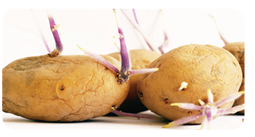
Picture, picture description begins the picture shows the budding of potato. picture description ends.
When we go to a bakery we see so many types of cakes and breads. These are very soft in nature. This is due to the presence of yeast. Single yeast undergoes asymmetric division. It produces a small protuberance which gradually grow and detach from the parent cell. This process is called budding.
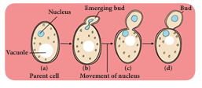
Picture, picture description begins budding of yeast pictures are given. Picture A Parent cell shows, Vacuole and Nucleus. Picture B and C Movement of nucleus shows Emerging bud. Picture D shows Bud. picture description ends.
In a pond we see so many algae. Spirogyra is a filamentous alga. When it matures, the filament divides into pieces. Each fragment or piece of a filament will grow into a new filament or individual. Likewise, spirogyra produces so many young ones and this process is known as fragmentation.
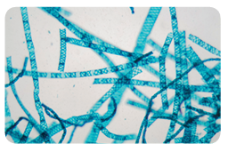
Picture, picture description begins the picture shows the fragmentation of spirogyra picture description ends.
Scarcity of water, high temperature, nutrient deficiency in soil etcetera, are unfavourable conditions. During these conditions non-flowering plants like algae, fungi, moss and ferns produce spores. They germinate into a new plant when favourable conditions return.
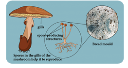
Picture, picture description begins Spore formation picture is given. Picture explains, Spores in the gills of the mushroom help it to reproduce, Spore producing structure, gills and Bread mould. picture description ends.
Compare the given plants and discuss with your teacher
Picture, picture description begins the picture shows the carrot. picture description ends.
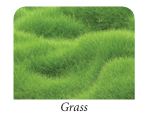
Picture, picture description begins the picture shows the grass. picture description ends.
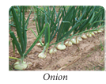
Picture, picture description begins the picture shows the onion. picture description ends.
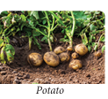
Picture, picture description begins the picture shows the potato. picture description ends.
Carefully remove a fresh carrot plant from the soil and observe it. Look at the part we usually consume as ‘carrot vegetable’. It is not a unripe fruit, but the tap root of the carrot plant. We can see that the tap root of the carrot is swollen. In the case of the carrot plant, the tap root has a different characteristic than the usual plants. Normally, each plant organ originally evolves to meet certain needs of the plant. For example, roots evolve primarily to anchor the plant and also to absorb water and mineral nutrients from the soil.
Leaves are adapted to optimize photosynthesis. Stems evolve to reach out to sunlight and also to conduct water from roots to leaves. However, in certain plant species, specific parts have evolved further in unusual and surprising ways to meet certain other specific needs, In some plants, root, stem, and leaves change their shape and structure to perform special functions like storage of food, mechanical support, protection and other vital functions. This is known as modification.
What appear as the ‘leaf’ of a cacti are actually their stem and what appear as ‘spine’ on them are actually leaf. Its leaves are modified into spines, an adaptation to reduce transpiration. Photosynthesis is performed by the stem part of the plant. In this section let us study about the modification of root, stem and leaves.
A, Roots for storage
Look at radish, turnip, beet root, and carrot. They all grow under the soil. As soon as you pluck it from the ground if you wash them gently, you will notice small roots dangling from their surface. All these vegetables are in fact roots of the plant. Instead of thin slender roots, they have become a place to store the food produced by them. Hence, they are thick and swollen. One can notice that the tap root of radish is in the shape of spindle, swollen in the middle and tapering at both ends. Such type of modified roots are called spindle shaped root.
Picture, picture description begins the picture shows the raddish. picture description ends.
At times, like in the case of turnip and beet root, the tap root can acquire a shape of top, that is spherical at the base and tapering shortly towards the apex. They are called as top shaped root.
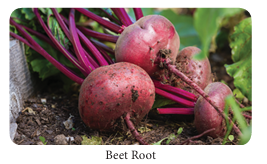
Picture, picture description begins the picture shows the beet root. picture description ends.
In case of carrot, the shape is conical, broad at the apex and tapering gradually towards the base and such modified roots are called conical shaped root.
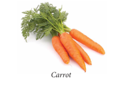
Picture, picture description begins the picture shows the carrot. picture description ends.
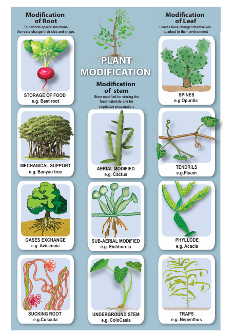
Picture, picture description begins Plant Modification Picture is given. This picture explains about three types of modifications. 1, Modification of Root. 2, Modification of Stem. 3, Modification of Leaf. picture description ends.
1, Modification of Root.
To perform special functions the roots change their size and shape.
STORAGE OF FOOD
Example, Beet root
MECHANICAL SUPPORT
Example, Banyan tree
GASES EXCHANGE
Example, Avicennia
SUCKING ROOT
Example, Cuscuta
2, Modification of stem.
(Stem modified for storing the food materials and for vegetative propagation)
AERIAL MODIFIED
Example, Cactus
SUB-AERIAL MODIFIED
Example, Eichhornia
UNDERGROUND STEM
Exaple, ColoCasia
3, Modification of Leaf
(Leaves have changed themselves to adopt to their environment)
SPINES
Example, Opuntia
TENDRILS
Example, Pisum
PHYLLODE
Example, Acacia
TRAPS
Example, Nepenthus
QR code, QR code description begins QR Code is given, 6, R, D, 1, 4. QR code description ends.
ACTIVITY 7
Aim:
To study the modification of root.
Materials Required:
Sample / Charts of radish, carrot, beet root, sweet potato, stilt roots and pneumatophores. Procedure:
Carefully observe the shape of each specimen.
Observation:
Draw the diagram and observe the morphological differences between the samples.
B, Mechanical Support
Look at a banyan tree. It seems to have many trunk, supporting it. However, many of them are actually roots. As the banyan tree is large and huge, it needs support so that it does not tilt and fall down. Many plants require such additional support. Such plants develop roots on their aerial parts to provide mechanical support. These roots grow downward and act as supportive organs. There are three types of modified roots for support.
Prop roots
Roots are modified to provide mechanical support as seen in banyan tree. These roots grow vertically from horizontal branches of a tree.
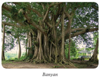
Picture, picture description begins the picture shows the banyan tree. picture description ends.
Stilt roots
In sugar cane and maize, adventitious roots arise from the nodes in cluster at the base of the stem. These roots are called stilt roots which give additional support.
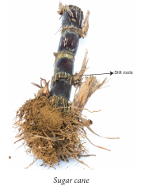
Picture, picture description begins the picture shows sugarcane root. picture description ends.
Climbing roots
In betel and black pepper, nodes or internodes bear roots which help in climbing.
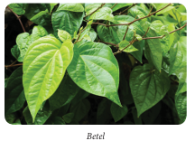
Picture, picture description begins the picture shows betel plant. picture description ends.
DO YOU KNOW? (Box Item)
A root growing from a location other than the underground, such as from a stem or leaf is called as adventitious root.
C, Breathing roots or Respiratory roots
Avicennia is a tree which grows in mangroves or swamps. They have roots which are seen above the ground for the purpose of gaseous exchange. These roots are erect, peg like structures with numerous pores through which air circulates. These roots are called breathing roots or pneumatophores.
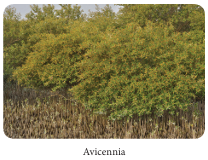
Picture, picture description begins the picture shows the avicennia. picture description ends.
DO YOU KNOW? ( Box item)
Vanda is an epiphytic plant, which grows on trees. The velamen tissue present in the epiphytic root absorbs moisture to perform photosynthesis.
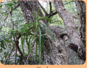
Picture, picture description begins the picture shows the vanda. picture description ends.
D, Haustorial roots
Roots may also perform some special functions. Haustoria or sucking roots, are one such example. Cuscuta a parasite plant, climb the trees and other vegetation and use the haustorial roots to penetrate the tissue of the host plant and suck nutrients from them. They are usually found in parasitic plants that depend on the host plants for nutrients.
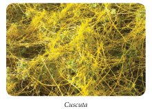
Picture, picture description begins the picture shows the cuscuta. picture description ends.
Can you guess what is common between ginger, onion bulb and potatoes. All three are stems. Some plants have their stems modified for storing food and for vegetative propagation. Modified stem may be aerial, subaerial or underground stems.
A, Aerial Modifications
Phylloclade
In dry climate, conserving water is a challenge. Water evaporates from the surface. If the surface area is larger, evaporation would be more and if the surface area is smaller, the evaporation will be less. Plants with many leaves have more surface area. Cactus hence has a thick stem which does most of the food production through photosynthesis and leaves are reduced to small spines with less surface area.
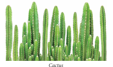
Picture, picture description begins the picture shows the cactus. picture description ends.
B, Sub – aerial Modifications
Stem of some plants remains sub – aerial which grow horizontally on the surface of the soil for the purpose of reproduction. There are four types.
Runner
The stem which grows laterally on the surface of the soil, breaks up to produce roots where it touches the ground to give rise to new plants. Example, Centella (Vallarai)
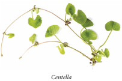
Picture, picture description begins the picture shows the centella. picture description ends.
Stolon
Stolon is a slender branch of the stem that grows upwards to some distance and then bends towards the ground. Upon touching the ground, it gives rise to a new plant. Example, Wild strawberry
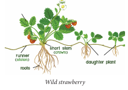
Picture, picture description begins the picture shows the wild strawberry. picture description ends.
Sucker
Sucker is a short and weak lateral branch that grows diagonally upwards and directly gives rise to a new shoot. Example, Chrysanthemum
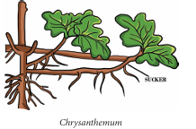
Picture, picture description begins the picture shows the chrysanthemum. picture description ends.
Offset
An offset is a short and thick branch that arises from the axial part of a leaf. It has thick internodes. It produces a tuft of leaves and cluster of small roots below. Example, Eichhornia
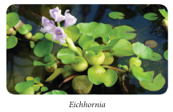
Picture, picture description begins the picture shows the Eichhornia. picture description ends.
C, Underground modifications
In aerial and sub aerial modifications, stem has indefinite growth. In underground modified stem, whole stem is burried under the ground and it has definite growth. Usually stem grows above the ground, but there are some stems that grow under the ground to store food. These underground stems swell and become thick. There are four types of underground stems. They are:
1, Rhizome, 2, Corm, 3, Tuber, 4, Bulb
1, Rhizome
It is an underground thick stem with nodes and internodes with scale leaves at the node. It grows horizontally and has an irregular shape. Rhizome have buds. It gives rise to new stem and leaves. Example, Ginger and Turmeric
Picture, picture description begins the picture shows the turmeric. picture description ends.
2, Corm
This underground stem is round in shape and f lat at the top and bottom. It is a condensed form of rhizome and bears one or more buds in the axils of scale leaves. Daughter plants arise from their buds. Example, Colocasia
Picture, picture description begins the picture shows the Colocasia. picture description ends.
3, Tuber
It is an enlarged, spherical underground stem that stores food. It has many dormant buds on its surface known as 'eyes'. If we plant a part of tuber with the bud, it grows into a new plant. Example, Potato
Picture, picture description begins the picture shows the potato. picture description ends.
4, Bulb
It is a condensed stem which is disc like and stores food in the fleshy leaves. The bulb has two types of leaves.
• Fleshy Leaves
• Scaly Leaves
The upper part of the stem has a terminal bud and it is covered by many scaly leaves. The inner fleshy leaves store food as seen in garlic and onion.
Picture, picture description begins the picture shows the onion. picture description ends.
ACTIVITY 8
Aim:
To study the modification of stem
Materials Required:
Specimens of ginger, potato, onion, mint, bougainvillea, acacia, opuntia and locally available specimens.
Procedure:
Observe the external morphology of each specimen.
Observation:
Draw diagram and bring out the differences and their function in each type of stem modifications.
Plants have changed themselves to adapt to the environment they grow. One of them is the modification of leaves. Leaves of several plants get modified into different form based on the purpose and environment.
1, Spines
Leaves are reduced to spines, and the stem is modified into green succulent part to perform photosynthesis. Example, Opuntia
Picture, picture description begins the picture shows the opuntia. picture description ends.
2, Tendrils
In climbers, the leaf of plant are modified into elongated structure to help the plants climb efficiently.
• Gloriosa superba – Leaf tips are modified into tendrils.
• Pisum sativum (Pea) –Terminal leaflets are modified into tendrils.
Picture, picture description begins the picture shows the pea Pisum sativum. picture description ends.
3, Phyllode
In Acacia auriculiformis, petioles expand to form leaf like structure. They carry out the function of leaf (Photosynthesis).
Picture, picture description begins the picture shows the acacia. picture description ends.
4, Traps
Plants that grow in nitrogen deficient places adapt themselves well to get it. In Nepenthes, the leaves are modified into a flask like structure, which is used to attract insects and other tiny animals. The inner wall of the leaf secretes digestive enzymes that help to digest the insects and extract the nitrogen needed for the plant.
Picture, picture description begins the picture shows the nepenthes. picture description ends.
Points to Remember
QR code, QR code description begins QR Code is given, Number, O, 1, 8, N, A. QR code description ends.
1, Choose the appropriate answer.
1, Vegetative propagation by leaves takes place in
A, bryophyllum
B, fungi
C, virus
D, bacteria
2, Asexual reproduction in yeast is
A, spore formation
B, fragmentation
C, pollination
D, budding
3, Reproductive part of a plant is
A, root
B, stem
C, leaf
D, flower
4, Pollinators are
A, wind
B, water
C, insect
D, All the above
5, Climbing roots are seen in
A, betel
B, black pepper
C, Both of them
D, None of them
2, Fill in the blanks
1, The male reproductive part of a flower is Dash
2, Dash is the basal swollen part of the gynoecium.
3, After fertilization the ovule becomes Dash
4, Breathing roots are seen in Dash plants.
5, Onion and garlic are example for Dash
3, State true or false. If false, correct the statement.
1, A complete flower has four whorls.
2, The transfer of pollen to the stigma is known as pollination.
3, Conical shaped root is carrot.
4, Ginger is an underground root.
5, Leaves of Aloe vera are fleshy and store water.
4, Match the following
Table, table description begins
Petal |
Opuntia |
Fern |
Chrysanthemum |
Phylloclade |
Attracts Insect |
Hooks |
Spore |
Sucker |
Bignonia |
Table description ends.
5, Answer very briefly.
1, Write two types of reproduction in plants.
2, What are the two important parts of a f lower?
3, Define – Pollination.
4, What are the agents of pollination?
5, Give example for Corm and Tuber
6, What is tendril?
7, What are thorns?
6, Answer briefly.
1, Differentiate bisexual flower from unisexual f lower?
2, What is cross pollination?
3, Write notes on phyllode.
7, Answer in detail.
1, Write a brief account on pollination.
2, Explain the underground stems.
8, Higher Order Questions.
1, Ginger is considered to be a stem, not a root. Why?
2, What will happen if pollen grain of rose gets deposited on stigma of lily flower? Will pollen germination takes place? Why?
9, Consider the following statements and choose the correct one.
1, Assertion: Pollination and fertilization in f lowers produce fruits and seeds.
Reason: After fertilization the ovary becomes fruit and ovule becomes seed.
2, Assertion: An example for conical root is carrot.
Reason: It is an adventitious root modification.
A, Assertion is incorrect, Reasoning is correct.
B, Assertion is incorrect, Reasoning is incorrect.
C, Assertion is correct, Reasoning is correct.
D, Assertion is correct, Reasoning is incorrect.
10, Picture based question.
1, Label the picture given below.
Picture, picture description begins a picture of a flower is given. In this picture names of the pollination parts, Stigma, Pistil, Filament, Ovule, Sepal, Stamen, Petal, Style, Anther, Ovary are given. picture description ends.
2, Identify the four plants shown in the following table. Name the different modifications in each of them.
Name |
Modification |
Garlic |
|
Turnip |
|
Rose plant |
|
Maize |
|
Reproduction and Modification in Plants
Let’s label the parts of the flower.
PROCEDURE:
Step 1: Use the URL to reach stimulation page. Click ‘Run adobe flash’ to launch the simulation.
Step 2: Select ‘OK’ button to run the activity.
Step 3: Drag a Stamen into the labelled box. Then click ‘OK’ button.
Step 4: Read the instructions at the top of the screen to do the activity.
Step 5: Click ‘Reset’ to refresh.
Reproduction plants URL: Step 2 Step 4 http://www.sciencekids.co.nz/gamesactivities/lifecycles.html
*Pictures are indicative only
*If browser requires, allow Flash Player or Java Script to load the page.
QR code, QR code description begins QR Code is given, Number, 4, Q, 8, K, H. QR code description ends.
Picture, picture description begins Body clock Activities Picture is given. In this picture, Suprachiasmatic nucleus like, Sleep, Happy, Awakening are given. picture description ends.
After studying this unit,
students will be able to:
QR code, QR code description begins QR CODE GIVEN, NUMBER, 7,L,E,B,O. QR code description ends.
Have you ever taken leave from the school due to sickness? What happens exactly when we become sick? Sometimes, we feel good even without taking any medicines and sometimes we need to consult a doctor and take regular medicines to be healed. Why is it so?
To prevent and treat sickness successfully, it is necessary to have complete understanding of the common sicknesses in the area and the combination of things that caused them. This lesson may help you to understand the various causes of sickness. In this lesson we are going to study about health and hygiene, care of the body, dieseases, health problems of children and safety.
Health is the best wealth. If you have good health, you will have a sound mind and you will gain good knowledge and wealth also. Health refers to a state of a sound mind and body free from any sickness or ailment, stress and problems. In simple words, health refers to the physical, emotional and psychological well being of a person. To maintain good health, you should follow good hygiene, eat nutritious food, do exercise, take rest and have a sound sleep.
Hygiene refers to the good habits and their practices which are followed to prevent diseases, maintain good health, especially through cleanliness, consumption of safe drinking water and proper disposal of sewage. It refers to all those activities that are done for improving and maintaining good health and sound mind.
Maintenance of personal and environmental hygiene is called cleanliness. In simple words, it refers to the state of being clean which is essential for good health. To protect us from diseases it is essential to maintain good health by taking regular bath, cleaning the clothes and surroundings and also avoiding unhygienic food consumption.
Personal hygiene is defined as the branch of health which is concerned with the individual’s adjustment to the physiological needs of the body and mind for the attainment of the maximum level of health. It also refers to the cleaning and grooming of the body.
QR code picture description begins QR Code is Given, Number, 6, 2, F, 3, 5. QR code description begins
Picture, picture description begins Personal Hygiene Picture is given. In this picture, shower daily, Wash hair regularly, Wash face and hands regularly, Food covered with Led, Washing Cloths and clean Uniform, Brush teeth at least twice day indicator icons are given. picture description ends.
Cold and flu are some of the common communicable diseases. They are caused not only by bacteria but also by virus. When you have cold and flu, you may also have running nose, cough, sore throat, and sometimes fever or pain in the joints. For some, this condition may also lead to mild diarrhoea.
What will happen, if cold affected friend/ classmate of you, sneezes or cough in front of you? When he sneezes, some secretions may come out of his nose. Secretions oozing out from the nose may contains the bacteria or virus. When the patient touches some other object or someone else after touching the nose, the virus is transferred. When the patient sneezes or coughs the virus comes out with the droplets and become airborne. Hence, it is a good practice for the patient with cold and flu to use a hand kerchief to blow the noses and also wash the hands often to ensure that they do not accidentally spread the virus to others.
Picture, picture description begins spreading of virus while sneeze picture is given. In this picture refers, in this area small droplets are vaporised into fine mist. Mist remains in the air for several minutes to few hours. Large droplet settles on the ground within few seconds. picture description ends.
A community is formed by a group of people living together in a particular area. If the people in a community wish to lead a healthy life, they should maintain basic community hygiene. It can be done by adopting the following measures.
DO YOU KNOW? (Box Items)
Dengue is spread by mosquitoes of Aedes aegypti caused by DEN-1, 2 virus belonging to the type - flavivirus. It decreases the counting of the blood platelets of human blood and it has a maximum flight range of 50–100 metres in and around the places.
ACTIVITY 1
List out your daily activities in the given table.
Activities |
Number of times in a day |
Brush teeth Wearing |
|
Take shower |
|
Wash hair |
|
Wash hands and feet |
|
Clean clothes / Uniforms |
|
Do you follow personal hygiene properly? How these activities will keep you physically fit?
ACTIVITY 2
Observe the picture and write remedial measures
Picture, picture description begins the ways in which mosquitoes are produced are shown in pictures. They are open trash, uncovered granaries, waste streams, garbage dump, wheels of upright vehicles, cattle ranches, uncovered water icons are given. picture description ends.
Human body is a massive miracle. It consists of organs and systems, which function continuously. Our body is compared to a machine. Human body works well with proper maintenance and guidance. For smooth functioning, all the parts of the body should work in unison. The digestive system, circulatory system and muscular system are the core systems that should be in synchronization and function well. We need to keep them well by proper care.
Dental care or broadly speaking oral hygiene is an important aspect of the personal health of an individual. Good oral hygiene implies sound teeth and healthy gums with healthy surrounding tissues. The physical act of chewing food promotes saliva and gastric secretions which help digestion. The act of chewing and tasting is called‘mastication’. It gives pleasure and emotional satisfaction of eating food. Teeth is essential for good appearance and clear speech also
Brushing two times a day, will prevent the formation of tartar and plaque on your teeth and gums.
When you floss, it will remove food particles, plaque and bacteria which build up between your teeth (When you start flossing, your gums may bleed a little bit, but after few days that will be stopped. It should be started only with proper medical guidance).
Picture, picture description begins teeth picture is given. picture description ends.
Diseases affecting the teeth
Failure to have oral hygiene results in diseases affecting the teeth. Some of the diseases affecting the teeth and gums, their causative agents and remedial measure are given below in the table
Table 6.1, Diseases affecting teeth
Sl. No. |
Name of the Diseases |
Causative Agents |
Impacts / Consequences |
Remedial measures |
1 |
Bleeding gums |
Vitamin C deficiency |
Bleeding of the gums |
Eating citrus fruits |
2 |
Tooth decay |
Bacteria in teeth |
Bacteria produce acids |
Brushing and flossing the teeth can prevent decay. |
3 |
Periodontitis |
Tobacco chewing |
Severe form of gum disease ruin the bones, gums, and other tissues |
Chewing type of tobacco should be avoided. Eat a well-balanced diet. |
Eyes are an important organ of our body. They are considered as windows to the world. Eyesight is the most important sense. 80% of what we perceive comes through the sense of sight. Protecting the eyes, can reduce the odds of blindness and vision loss. We should protect our eye from the diseases, surroundings and climate condition.
Diseases affecting Eye
Diseases affecting the eyes and the remedial measures are given below
Table, 6.2, Diseases affecting eyes
Serial Number. |
Name of the Diseases |
Causative Agents |
Impacts or Consequences |
Remedial measures |
Serial Number, 1. |
Diseases Night Blindness |
Causative Agents, Lack of vitamin A. Disorder of the cells in your retina |
Impacts or Consequences, Makes it hard to see well at night or in poor light. |
Remedial measures, Eat foods rich in vitamins like carrots, papaya. |
Serial Number, 2 |
Diseases Conjunctivitis (Pink eye) |
Causative Agents, Caused by a virus and bacteria |
Impacts or Consequences, One or both eyes can be affected. Highly contagious; can be spread by contamination and sneezing. |
Remedial measures, Antibiotic eye drops or ointments, home remedy |
Serial Number, 3. |
Diseases Colour blindness |
Causative Agents, Genetic condition |
Impacts or Consequences, • Difficulty in distinguishing between colours. • Inability to see shades or tones of the same colour. |
Remedial measures, There is no known cure for colour blindness. Contact lenses and glasses with filters. |
ACTIVITY 3
Observe the pictures and tick do’s and don’ts in the given tables
Picture, picture description begins Activity picture is given. In this picture, Rubbing Eyes, Watching TV or Work on computer for a long time, place cucumber pieces on eyes, Use cold water for cleaning eyes icons are given. picture description ends.
Serial Number |
Practices |
I Do |
I Don’t do |
1 |
Do you rub the eyes? |
|
|
2 |
Do you watch TV/work on computer for a long time? |
|
|
3 |
Do you use cold water for cleaning your eyes? |
|
|
4 |
Do you like eating carrot? |
|
|
5 |
Do you regularly eat fruits like orange, sweet lemon and lemon? |
|
|
In the above checklist what do you understand?
The condition of the hair reflects to some extent the nutritional status and general health of the body. Thin, sparse hair and the loss of hair indicates a poor nutritional status. The deficiencies in diet, physical and mental illness of various kinds may also lead to premature greying of hair.
The hair follicles from which the hair grows produce oil which keeps the hair smooth. The sweat and the dead skin cells come off the scalp. The oil, sweat and dead cells all add together and can make the hair greasy and look dirty unless it is washed regularly.
Keeping hair clean and healthy
• Regular hair wash and massage of the scalp will remove the dead skin cells, excess oil and dust.
• Rinsing the hair well with clear water and using good toothed comb for hair dressing is highly
essential for the maintenance of hair.
A disease is the functional or physical change from a normal state that affects the health of a person by causing disability or discomfort. The following are the conditions that could lead to the development of disease in an individual.
• Infection caused by disease-causing microbes.
• Lack of balanced diet.
• Poor lifestyle and unhealthy habits.
• Malfunctioning of one or more body parts or organs.
The prevention and treatment of diseases can be considered in two groups for their better understanding. They are communicable and non-communicable disease.
QR code, QR code description begins QR CODE GIVEN, NUMBER, W, X, V, 8, K. QR code description ends.
Communicable diseases are those diseases that spread from one person to another. Healthy persons must be protected from people with communicable diseases. Diseases spread through contaminated air, water, food or vectors (insects and other animals).
a, Diseases caused by Bacteria
Communicable diseases like tuberculosis, cholera and typhoid, are caused by bacteria. These diseases spread through air, water and some other organisms
1, Tuberculosis
Tuberculosis (TB) is caused by Mycobacterium tuberculae and spreads from one person to another person through air, spitting, prolonged contact and sharing materials of the patient. The symptoms are fever, weight loss, chronic cough, bloody spitting and difficulty in breathing
Picture, picture description begins mycobacterium tubercular picture is given. picture description ends.
Prevention and treatment
Picture, picture description begins the picture shows the causative agent for diseases. Unsafe drinking water, Not washing hands before eating, not washing hands before preparing foods, Not washing hands after touching faeces, Not using latrine, Flies on food, Not washing food before preparing icons are given. picture description ends.
2, Cholera
Cholera is caused by Vibrio cholerae and spread through the consumption of contaminated food or water. The symptoms of cholera is vomiting, severe diarrhoea and cramps in legs
Prevention and treatment
Picture, picture description begins Vibrio Cholerae Picture is given. In this picture a boy drinking contaminated water from a pond. It contains Vibrio cholerae micro organism. picture description ends.
3, Typhoid
Typhoid is caused by Salmonella typhi and spreads by contaminated food and water. The symptoms are anorexia, headache, rashes on abdomen, dysentery and high fever up to 104°F.
Prevention and treatment
Picture, picture description begins salmonella typhi picture is given. picture description ends.
Picture, picture description begins symptoms of typhoid fever picture is given. In this picture, White coating on the tongue, Enlarged Liver and Spleen, Rash on Body, Ulcer in the Intestine are indicated. picture description ends.
b. Diseases caused by Virus
Viral diseases are extremely widespread infections caused by many type of viruses. Some diseases caused by viruses are hepatitis, chickenpox and rabies.
1, Hepatitis
Hepatitis is one of the most dangerous and fatal diseases caused by Hepatitis virus- A, B, C, D, E. Its mode of transmission is contaminated water, sharing of needles and blood transfusion. The symptoms of hepatitis is loss of appetite (anorexia), vomiting, eyes and urine turning to yellow colour.
Prevention and treatment
Picture, picture description begins Liver and Hepatitis Virus pictures are given. Liver marked as color in yellow and Hepatitis Virus color in violet. picture description ends.
2. Chickenpox
Chickenpox also known as varicella is a highly contagious infection caused by the varicella zoster virus. This disease spreads through air and contact with an infected person. Its symptoms are appearance of rashes on the whole body, fever, headache and tiredness.
Picture, picture description begins Symptoms of chicken pox picture is given. In this picture, Headache fever, Loss of appetite, Tiredness, Rash, Develops into fluid-filled blisters that eventually turns into crusts, Appears first on chest, back and face, then spread to the rest of the body, Itchy are given. picture description ends.
Prevention and treatment
c. Rabies
Rabies is a fatal disease which is transmitted by the bite of the infected dog, rabbit, monkey, cat etcetera The virus present in the saliva of dog enters the brain via neurons. T he symptoms of rabies are hydrophobia (extreme fear for water), fever for 2 – 12 weeks and exaggerations in behaviour.
Prevention and treatment
ACTIVITY 4
Visit a nearby Primary Health Centre and collect information about vaccination given to children of 0-15 years. Meet a doctor or a health worker in the hospital and enquire about the following.
• The types of vaccines available there.
• Can disease be prevented by their usage?
• The age at which it should be given.
Picture, picture description begins the picture shows, how the rabis virus attack the human being. In this picture, 1, Virus enters via animal bite, 2, Virus replicates in muscle at site of bite, 3, Virus infects nerve in peripheral nervous system. Moves by retrograde transport, 4, Virus replicates in dorsal root ganglion and travels up spinal cord to brain. 5, Brain infected, 6, Virus travels from brain via nerves to other tissues such as eye, kidneys, salivary glands are explained. picture description ends.
DO YOU KNOW? (Box item)
Vaccine
Vaccine is a biological preparation that provides active acquired immunity to a particular disease. Vaccines like (BCG, Polio, MMR) are given at early childhood to protect from other diseases.
Non-communicable diseases do not spread from person to person. They are caused by other factors. Therefore, it is important to know which diseases are communicable and which are not. They are never caused by germs, bacteria, or other living organisms that infect the body. Antibiotics or medicines that fight against germs do not help to cure non-communicable diseases. Some of the non-communicable diseases are explained below.
a, Wearing out of body parts
Rheumatism, heart attack, epileptic seizures, stroke, migraine headache, cataract and cancer.
b, External harmful agents entering the body
Allergies, asthma, poisons, snakebite, cough from smoking, stomach ulcer, alcoholism.
c, Lack of trace elements in the body
Anemia, pellagra, night blindness and xerophthalmia, goiter and hypothyroidism
d, Malnutrition
Nutritious food is needed for a person to grow well, work hard, and stay healthy. Many common sicknesses are caused by malnutrition.
DO YOU KNOW? (Box item)
Leucoderma is a non – communicable diseases caused by partial or total loss of pigmentation in the skin (melanin pigment). This condition affects people of any age, gender and ethnicity. There is no cure. It does not spread by touching, sharing food or sitting together.
Anaemia
It is caused by eating food with less iron content and can also be caused due to feeding some other foods instead of breast milk. Severe anaemia in children may lead to hookworm infection, chronic diarrhoea and dysentery. In the recent days, school going children, especially girls are affected by anaemia. The Government of Tamil Nadu provides iron folic tablets to all the girls in the schools of all areas every week.
The signs of anaemia
Treatment and prevention of anaemia
Anaemia can be preventing by takes proper food and diet.
Food
Moringa leaves, dates, liver (sheep and chicken), green, green leafy vegetables like beans, peas, lentils and greed banana.
Pills
Cod liver oil tablet, Ferrous sulphate
DO YOU KNOW? (Box Item)
As a general rule, iron supplements should be given orally, not to be injected, because it is dangerous.
First aid is the immediate treatment given to the victim of trauma or sudden illness before medical help is made available. First aid is important for following reasons.
QR code, QR code description begins QR CODE GIVEN, NUMBER, Y, S, D, 2, 8. QR code description ends.
Picture, picture description begins the picture shows the first aid kit items. Tablet, Cotton, Band aid, Injection items are in the kit. picture description ends.
The tissue damage caused by heat, chemical, electricity, sunlight or nuclear radiation is known as burns. Mostly burns are caused by scalds, building fires, flammable liquid and gases. There are three types of burns, according to degree of burning.
Picture, picture description begins the picture shows the skin damage by burns. picture description ends.
Picture, picture description begins the picture shows the first (outer layer affected), second (damage of epidermis and the layer beneath affected) and third-degree (damage or complete destruction of the skin to its full depth) skin affected. picture description ends.
First aid for Burning
In case of minor burns, the affected area should be washed with cold water and an antiseptic cream should be applied. In case of severe burns, where deeper layers of tissues get destroyed and blisters appear, use of water should be avoided. The burnt area should be covered with a clean non-sticking cloth or bandages. Larger burns need immediate medical attention. It is very important to keep a fire extinguisher readily available
Cuts and scratches are the areas of damage on the surface of the skin. A cut is a line of damage that can go through the skin and into the muscle tissues below, whereas a scratch is surface damage that does not penetrate the lower tissues. Cuts and scratches may bleed or turn red, become infected and leave scars.
Picture, picture description begins, A hand Cut picture is given. In this picture a hand is cut, blood comes from cutting area. picture description ends.
First aid for cuts
For minor cuts, the affected area should be washed with cold running water and cleaned with an antiseptic liquid. Then an antiseptic cream should be applied on the wound and sterilized bandage should be tied to prevent infection. If the cut is deep, a clean cotton pad should be placed on the cut and pressed, and the injured person should be taken to a doctor immediately
Picture, picture description begins, A first aid procedure, on how to bandage a cut is given in the picture. picture description ends.
The most important thing is to help anybody, but you must also protect yourself from HIV and other blood-borne diseases when you help someone who is bleeding. You should wear gloves or a clean plastic bag on your hands. Be careful not to prick yourself with needles or other sharp objects around the person you are helping
Points to Remember
QR code QR code description begins QR code is given, Number, F, R, W, Y, O. QR code description ends.
1, Choose the appropriate answer.
1, Ravi has sound mind and physically fit body. It refers to
a, hygiene
b, health
c, cleanliness
d, wealth
2, Sleep is not only good for our body, but it is also good for
a, enjoyment
b, relaxation
c, mind
d, environment
3, Our living place should be
a, open
b, closed
c, clean
d, unclean / untidy
4, Tobacco chewing causes
a, anemia
b, periodontitis
c, tuberculosis
d, pneumonia
5, The first aid is to
a, save money
b, prevent scars
c, prevent the medical care
d, relieve the pain
2, Fill in the blanks.
1, A group of people living together in a particular area is called dash.
2, I am green colour box with garbage. I am dash.
3, Eyes are considered as dash to the world
4, The hair follicles produce dash which keeps the hair smooth.
5, Tuberculosis is caused by the bacterium dash.
3, State true or false. If false, correct the statement
1, All food should be covered.
2, Chicken pox is also known as leucoderma.
3, Stomach ulcer is a non- communicable disease.
4, Rabies is a fatal disease.
5, First – degree burns damage the whole skin.
4, Match the following.
Rabies |
Salmonella |
Cholera |
Yellow Urine |
Tuberculosis |
Cramps in legs |
Hepatitis |
Hydrophobia |
Typhoid |
Mycobacterium |
5, Analogy
1. First degree burn isto Epidermis as Second degree burn isto dash
2. Typhoid isto Bacteria as Hepatitis isto dash
3. Tuberculosis isto Air as Cholera isto dash
6, Consider the following statements and choose the correct option.
1, Assertion: Oral hygiene is good.
Reason: Sound teeth has healthy gums with healthy surrounding tissues.
2. Assertion: Chicken pox is a viral communicable disease.
Reason: It is characterized by rashes on the whole body, fever, head ache and tiredness.
a] Both A and R are true
b) Both A and R are false
c) A is true but R is false.
d) A is false but R is true
7, Answer very briefly.
1, What is hygiene?
2, Write about the right way of protecting the eyes.
3, How to keep your hair clean and healthy?
4, Sobi frequently plays with her mobile. Suggest your ideas to protect her eye from irritation?
5, Give any two communicable diseases, which spread in your locality during monsoon.
6, What first aid will you provide in the case of bruises?
7, Ravi said, Ganga had minor burn, so I washed it with water. Do you agree with his statement? Explain, why?
8, Answer briefly.
1, Why first aid is essential?
2, What steps you will follow to keep your teeth healthy?
3, What does this picture mean?
Picture, picture description begins Please do not litter Picture is given. picture description ends.
4, Distinguish communicable diseases and non-communicable diseases.
5, Name the mode of transmission of communicable diseases.
6, Your friend says that her hair is thin, spares and lost very often. Suggest your ideas to reduce this problem.
9, Answer in detail.
1, Write about any three communicable diseases in detail.
2, List the situations in which first aid is given. What would you do if a person suffers from skin burns?
3, How the diseases are transmitted from one person to the other person?
10, Higher order thinking question.
A person is sleeping during day time. Why does this happen to some people that they feel sleepy during day time in office or in the classroom? Have you ever come across such situation? Explain
Picture, picture description begins a person is sleeping during day time. picture description ends.
QUEEN OF MEDICINE – PENICILLIN
A picture story is given,
Picture, picture description begins The history of Alexander's discovery of penicillin is explained as the legends of our temples illustrate it in pictures. Comments on the image are given below. picture description ends.
Picture, picture description begins Computer and Visual Communication Concept is given in Picture. Computer, Tab, Microscope, Laboratory items are in the picture. picture description ends.
After learning the lesson, students will be able to
QR code , QR code description begins QR CODE GIVEN, NUMBER, A, R, E, 9, 4. QR code description ends.
In general, whenever we think of computers, the things that come to our mind are computer screen, keyboard, mouse and CPU. We have learnt about computer and the parts of a computer as introductory part in standard VI. Apart from them, software and hardware also play vital role in the working of computer. Now, we shall learn how to operate the computer
The reason we prefer computer is its speed and the ability to store data. How can we save data and information in computer? We can save them in folders which accommodate multiple files or a single file. Let us understand the terminologies like file and folder before moving further
The output we get from any application is commonly referred as ‘file’. Therefore, the application for the specific purposes determines the nature of the file.
Picture, picture description begins the picture of files in computer is given. picture description ends.
A folder is a storage space that contains multiple files. We can create files as per the user’s need. For clear understanding, we can take the example of a bookshelf in a library. The individual book can be considered as a ‘file’ and the whole set of books in a shelf can be considered as folders. When we right click on the mouse, the pop-up menu appears on the screen with multiple options. Select ‘New’ option and a secondary menu comes up with another set of options. Select Folder option in the menu. You can now save your file(s) in the newly created folder
Picture, picture description begins folder picture is given. picture description ends.
More people are using Windows and LINUX operating systems in their computers. We can do many activities like collecting notes, drawing / painting, creating animations / spreadsheets / word docs / PPTs etcetera
We use ‘Guide Board’ to go to unknown places. When we ‘On’ the computer and click the ‘Start’ button at the left corner of the computer, it shows the list of all programs in the in the computer. Now select the required program and create the required files.
If the computer is operating on the Windows OS, we can collect our notes in ‘Notepad’ application and draw pictures in ‘Paint’ application. As per its name we can type notes in ‘Notepad’ and save the created files in a folder. Likewise, in the ‘Paint’ app we can draw and edit pictures. Let us see how we can create image gallery, animations and graphics easily
Picture, picture description begins the picture explains how to create a file. picture description ends.
Pictures and audio-visuals gives us more understanding than teaching and writing on the black board. Is it right?
Instead of saying a story like ‘once upon a time there was a king’ we can understand the concept easily by seeing the video. Also it registers firmly in the minds of the students. The device which helps in explaining the concepts easily through pictures is known as ‘Visual Communication Device’. For example, photos, audio – visuals, drawings, animations all these can be created easily with the help of computer. Cinema is a good example for ‘Visual Communication Device’.
Picture, picture description begins visual communication devices picture is given. picture description ends.
You all must have admired the photos in the albums. To beautify photos and edit the photos, photographers are using a software known as ‘Photoshop’. Can we make photo gallery only with the help of photos or is there anything more to do with a bunch of photos? We can make photostory. Yes, with the photos we can make a story.
In our primary classes we have studied photo stories like this. Children learn concepts easily through photo stories than by reading words. This type of photo stories can be converted easily into videos with the help of the software ‘Microsoft Photostory’.
QR code, QR code description begins QR CODE GIVEN, NUMBER, Y, I,V,R,7. QR code description ends.
Picture, picture description begins Microsoft photo story software picture is given. picture description ends.
Microsoft Photo story
To make videos with the help of this software we have to order the photos first, then we have to select a music and keep it in a file.
Step 1
Open the application of ‘Microsoft Photostory’. In that select ‘Begin a new story’ and click on ‘Next’
Picture, picture description begins Microsoft photo story step 1, image is given. picture description ends.
Step 2
Click ‘Import Picture’ in the next screen. Now, the files in our computer will appear. Select 'Saved pictures' for video. There is a provision for editing the picture. If required, we can edit the image and click on ‘Next”
Picture, picture description begins Microsoft photo story step 2, image is given. picture description ends.
Step 3
Now we can input small text which is apt to the pictures. Then click on ‘Next’ and give animation to the videos. We can give audio effect also to these images. After finishing this click on ‘Next”.
Step 4
To provide background music, we can select a music file through 'Select Music' and click on 'Next'
Picture, picture description begins Microsoft photo story step 4 image is given. picture description ends.
Step 5
Next select a title for the story and select the place where it has to be saved in your computer. Then, through ‘Settings’, change the format of the video.
Picture, picture description begins Microsoft photo story step 5, image is given. picture description ends.
Step 6
Now our video is ready to view. Click ‘View your story’. You can see your video now
Picture, picture description begins Microsoft photo story step 6, image is given. picture description ends.
a, Raster Graphics
The picture or image which is created by Raster Graphics is entered ‘as file and data’. Pictures are of two types one is Vector another one is Raster.
Raster Graphics are created on the basis of ‘Pixels’. The photos taken by camera and the photos scanned by a scanner are of the Raster type. When we enlarge this type of photos, we could see the pictures as rectangular layers or grids
QR code, QR code description begins QR CODE GIVEN, NUMBER, 9, F, M, V, S. QR code description ends.
Types of Raster Files
• .png (Portable Network Graphics)
• .jpg or jpeg (Joint Photographics Experts Group)
• .gif (Graphics interchange Format)
• .tiff (Tagged Image File Format)
• .psd (Photoshop Document)
The Software which edit the Raster Graphics is Adobe Photoshop.
b, Vector Graphics
As the Vector Pictures are created on the basis of Mathematics, even when we enlarge the picture its accuracy will not change.
Types of Vector Graphics Files
• .eps (Encapsulated Post Script)
• .ai (Adobe Illustrator Artwork)
• .pdf (Portable Document Format)
• .svg (Scalable Vector Graphics)
• .sketch
The softwares which edit the Vector Graphic Images are:
• Adobe Illustrator
• Sketch
• Inkscape
Creating vector image through Inkscape software
Picture, picture description begins explains how to create vector image by inscape software picture is given. picture description ends.
Inkscape software is used to convert image drawn on paper into vector image
Step 1
First, we have to scan the picture we have drawn in the computer.
Picture, picture description begins shows how to scan the picture which drawn in the computer by inscape software picture is given. picture description ends.
Step 2
Then we have to open this picture in the ‘Inkscape’ software. Select the entire picture.
Picture, picture description begins explains how to open the picture through inscape software picture is given. picture description ends.
Step 3
Select ‘Path’ option. From the submenu, select ‘Trace Bitmap’ option.
Picture, picture description begins explains how to select path trace bit map option by inscape software. picture description ends.
Step 4
Do corrections in the small screen which appears. Now upload this edited image and click on OK
Picture, picture description begins explains how to upload the edited image by inscape. picture description ends.
Step 5
Now close the screen of TRACE BITMAP. Now click the picture that appears on the present screen and drag it. You will get the vector graphics of the drawn picture. SAVE it by clicking the ‘save button’ and save it in your choice of file format
Picture, picture description begins explains how to drag the edited image. picture description ends.
As soon as we see the above picture we know the difference between the two. The first is TWO DIMENSIONAL (2D) another one is THREE DIMENSIONAL (3D). The two-dimensional (2D) images have only the two dimensions - length and height. But three-dimensional images (3D) have length, height and width. 3D images appear in front of our eyes like it happens in the real world
Picture, picture description begins the picture shows the 3 dimensional images of some shapes. picture description ends.
Three dimensional videos will bring the scenes alive before our eyes. Already there are three dimensional films. Now three-dimensional games have also got released.
Now there is a new technology - VIRTUAL REALITY in 3D. VIRTUAL REALITY is a technology which shows the computer image as real image. When we see games through this technology we can feel / perceive the setting of the game as real. Now this technology has been introduced in Smart Phones too
Picture, picture description begins the picture shows the 3 dimensional images of some shapes. picture description ends.
1, Choose the correct answer.
1, Which of the following is an example for animation?
a) Sound communication
b) Visual communication
c) Vector communication
d) Raster communication
2, Who uses the photoshop software more?
a) Teacher
b) Doctor
c) Painter
d) Photographer
3, Which option is used in the Microsoft Photo story to upload the photos?
a) Begin a Story,
b) Import Pictures
c) Settings
d) View your Story
4, Which technology shows the computer drawn pictures as real picture?
a) Inkscape
b) Photo Story
c) Virtual Reality
d) Adobe Illustrator
5, Which technology uses pixels to create pictures?
a) Vector
b) Raster
c) Both
d) None
6, Which software is used to create symbols?
a) Photoshop
b) Illustrator
c) Vector Graphics
d) Photo story
2, Match the following
Animations |
3D |
Raster |
Visual Communication |
Vector |
Pixles |
Virtual Reality |
Microsoft Photo story |
Video Story |
Illustrator |
3, Answer briefly.
1, What is Raster Graphics?
2, Write a note on 2D and 3D pictures.
3, Differentiate between Raster and Vector images.
4, With the help of Microsoft Photo story how will you create a video?
GLOSSARY
Authors List - VII Science
Advisory Committee & Chairperson
Dr. T.V. Venkateswaran Scientist, DST, -Vigyanaprasar, New Delhi.
Dr. Mazher Sulthana, Professor & Head (Retired), P.G. Department of Zoology, Presidency College, Chennai.
Reviewers
Prof. Reeta John, Professor & Head, Dept. of Theoretical Physics, Madras University, Chennai.
Dr. V. Sivamadavi, Associate Professor, Bharathi Women's College, Chennai.
Dr. R. Kumaran, Assistant Professor, Dept. of Chemistry, Vaishnav College, Arumbakkam, Chennai.
Dr. G. Rajalakshmi, Assistant Professor, Department of Botany, Bharathi Women's College, Chennai.
Dr. K. Chinthanaiyalan, B.T. Assistant, GHS, Periyarnagar, Nandampakkam, Kanchipuram.
Content Readers
Dr. K.P. Girivasan, Associate Professor, Department of Botany, Govt. Arts & Science College, Nandanam, Chennai
Dr. S. Shameem, Deputy Director, S, C, E, R, T, Chennai.
ICT Coordinators
A.Saranya Second Grade Teacher P.U.P. School, Sellathapalayam, Modakkurichi Block, Erode District.
Experts & Coordinators
Dr. D. Prabakaran, Assistant Professor, S, C, E, R, T, Chennai.
S. Rajesh B.T. Assistant GHSS, Vanganoor, Thiruvallur.
Authors
D. Perumal Raj, BT Assistant., PUMS, Manickamangalam, Valaingaiman Block, Thiruvarur.
M. Mohanapriya PGT. Assistant., GGHSS, Koradachery, Thiruvarur District.
N. Ramesh Babu BT Assistant., PUMS, Sholavaram, Thiruvallur District
Dr. N. Vidhyageetha Lecturer - DIET Aduthurai, Thanjavur.
M. Ananthan BT Assistant., GHS, Servaikaranpatti, Dindigul.
S. Shyamala BT Assistant., Govt. Adi- dravidar Welfare High School, Pulianthope, Chennai.
N. Manikandan BT Assistant., Government High School, Rasingapuram, Theni.
N. Balusamy HM (Retired), Corporation Higher Secondary School, Peelamedu, Coimbatore.
M. Tamilarasi PGT (Retired), St. Joseph Government Higher Secondary School, Vadugarpet, Lalgudi, Trichy.
D. Revathy B.T, Municipal Higher Secondary School, Rajagopalapuram, Pudhukottai District.
Art and Design Team
Illustration
Charles, Pramoth, Velmurugan
Layout Design
V.S. Johnsmith, R. Gopinath, V. Sridhar
Info Graph
V. Srinivasan
Wrapper Design
Kathir Arumugam
EMIS Technology Team
R.M. Satheesh
State Coordinator Technical, TN EMIS, Samagra Shiksha.
K.P. Sathya Narayana
IT Consultant, TN EMIS, Samagra Shikaha
R. Arun Maruthi Selvan
Technical Project Consultant, TN EMIS, Samagra Shiksha
QC
Manohar Radhakrishnan
Co-ordination
Ramesh munisamy
Typing
M. Sathya